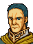

Narration
いわゆる『盗賊の森』をぬけた
リーフたち『解放軍』の目の前に
ようやく城塞都市ターラが
そのすがたをあらわした
Opening 1 The scheme of Friege's 20th Corps

リスト将軍
状況はどうか？

はっ
ターラの包囲は完了しました
パウルス司令官
今より
総攻撃をかけたいと考えております
そうか・・・
だがバルダックの第８軍団が
もうすぐ到着するはずだ
あまり無理押しはするなよ
兵をムダに失うことはない
はっ、こころえております
(Paulus leaves)
ふんっ
バルダックにてがらを
よこどりされてたまるか
全軍、これより総攻撃をかける！
退却は許さん！
攻めて攻めて攻めまくれ！
Opening 2

いよいよ
総攻撃がはじまったか・・・
さて、どうする？ グレイド

いかんせん、兵力がちがいすぎる・・・
このままでは
全滅するのも時間の問題だ

私が敵をかく乱してまいりましょうか？
時間かせぎにはなると思いますが・・・
いや、それはだめだ
敵にはロングアーチがある
単騎で行っても格好の標的になるだけだ
竜騎士は
不意をついての一撃離脱を基本とする
エダ、あせりは禁物だぞ
はい、兄上
とりあえず私の騎士団を出そう
グレイドの部隊だけで大丈夫か？
傭兵はみんな逃げたぞ
うむっ
シャナン王子はどうなのだ？
剣聖オードの直系ならば
その力は
われわれとはくらべ物にならないはず
なぜ協力をこばむのだ？
ああ・・・あの男か
・・・よくわからないが
下々の戦いには興味がないとか
いっている
フン、それで
女遊びにかまけていれば
世話はないな
・・・やむをえぬ
われわれだけで行くとするか
あまり無理はするな
まだ始まったばかりだ
先はまだまだ長いぞ
わかっているさ
Opening 3

王子
あの山向こうにみえるのが
城塞都市ターラです
・・・むっ、これはいかん
すでに帝国の総攻撃が
始まっているようです

ターラの者たちを見殺しにはできない
すぐにターラに突入しよう
ですが
われらの兵力は
まだ一部しか到着していません
その上、包囲軍には
多数のロングアーチが配置されております
少し危険では？
危険は承知の上だが、他に方法はない
ターラの滅亡を許せば
ぼくたちの戦いもここで終わる
そうだろ、アウグスト？

さよう
われらは完全に民の支持を失います
今の戦力で民の支持まで失えば
あとは消滅するしかありませんな
Talk: Leif → Glade
グレイド？・・・
騎士グレイドなのか！
？
・・・リーフ王子！？
ま・・・まさか・・・
グレイド
おどろいているようだな
たしかにこの方はリーフ王子だ
わがレンスター王国軍を率いる
主君であり、そして
北トラキア解放軍の盟主でもある
レンスター王国軍・・・
では、ドリアス卿
われらが悲願が
ようやくかなうのですね！
そうだグレイド
我らはレンスターへ帰る
帝国の圧政に苦しむ民を
我らが手で解放し
王城ノヴァに
再びこのゲイボルグの旗を
押し立てるのだ！
ああ・・・
やっとこの日が・・・
リーフ様！
カルフ王、キュアン王子なき今
我らが希望はリーフ様だけです
どうかお父上のご遺志を
お継ぎください！
もちろんだ！
グレイド
ともにレンスターを取り戻そう
はっ！
我らレンスターの家臣は
どこまでもリーフ様に
ついてまいります！
Talk: Finn → Glade

グレイド、無事だったか！
フィンか、久しぶりだな
アルスターでの戦い以来だ
もう１０年になる・・・
そうだな・・・
長い月日だったが
リーフ様をよく守ってくれた
きさまには礼をいわねばならん
それはおたがいさまだ
グレイドはドリアス卿をたすけ
ランスリッターを育ててくれた
その戦力がなければ
リーフ様もここまで来ることは
できなかっただろう
あのとき、俺達は約束した
俺はレンスターの旗を
きさまはリーフ王子を
その命にかえても守り続けると
そうだ・・・
そして、それが今
ようやくはたされたわけだ
だがグレイド
戦いはまだ始まったばかり
気をゆるめるわけにはいかないぞ
そうだな、レンスターに再び
ゲイボルグの旗がはためくまでは・・・
フィン
きさまと酒をくみかわすのは
それからだな
とりあえずリーフ様をお連れして
ターラ城内へはいれ
敵の大部隊が
接近しているという情報もある
このままでは危険だ！
Talk: Selphina → Glade
If Talk: Leif → Glade has not happened yet

グレイド
無事だったのね
よかった・・・
セルフィナ・・・
きみも来てくれたのか
ええ
ターラの危機を聞いて
リーフ様とごいっしょに
でもほんとうに
会えてよかった・・・
きみには心配をかけて
すまないと思っている
だがセルフィナ・・・
俺はまた多くの若者たちを
死なせてしまった
俺にもっと力があればと思うと
悔やまれてならない・・・
いいえ！
あなたはレンスターで
最高の騎士です
私はあなたの妻であることを
誇りに思っています
だから、そんなにご自分を
おせめにならないで・・・
ありがとう、セルフィナ
きみと会えて元気になれたよ
あ、そうだ、これを見てくれ
これは？
・・・まさか・・・
伝説のゆうしゃの弓では！？
そのようだな
ターラの街でぐうぜん見つけた
きみにと思い買っておいたが
使ってくれるか？
ええ、もちろんです！
ありがとう、あなた！
If Talk: Leif → Glade has already happened
グレイド
無事だったのね
よかった・・・
セルフィナ・・・
きみも来てくれたのか
ええ
ターラの危機を聞いて
リーフ様とごいっしょに
そうか
王子とはさきほどお会いしたが
あまりの変わりようにおどろいたよ
アルスターでお別れして１０年・・・
もう１５才になられたのだな・・・
私も初めてお会いしたときは
おどろきました
まさか
あんなに大きくなって
いらっしゃったなんて
・・・りっぱになられた
まるで、若いときのキュアン様を
見ているようだった
私は
エスリン様ににていると思いましたわ
目のあたりなんか、ほんとにそっくりで
そうかな
あの目はキュアン様ゆずりだと
思うがな・・・
いいえ、エスリン様です！
私はあの方に
妹みたいに可愛がっていただいたから
よく覚えています！
おいおい
そんなにむきにならなくても
いいだろう
お二人の子供なんだから
にているのはあたりまえだ
あ・・・そうね、ごめんなさい
エスリン様のことを
いろいろと思い出してしまって
それでつい・・・
そうだな・・・
生まれたばかりの王子を残して
さぞかし心残りだっただろうな・・・
ええ・・・
あのころ・・・小さなリーフ様に
アルテナ様がよくしっとされてね
エスリン様も困ってらしたわ
でも、ほんとにお幸せそうで
私も大人になったらエスリン様のような
母親になりたいと願っていました
それが、あのイードの・・・
悪夢のような出来事で・・・
セルフィナ？・・・
ごめんなさい・・・
もう二度と泣くまいと誓ったのに・・・
いや、いいんだ
それより、この弓を見てくれ
これは？・・・まさか・・・
伝説のゆうしゃの弓では！？
そのようだな
ターラの街でぐうぜん見つけた
きみにと思い買っておいたが
使ってくれるか？
ええ、もちろんです！
ありがとう、あなた！
House centre bottom
.png)
よう、ターラに行くんだってな
帝国兵は重装備したやつが多い
このアーマーキラーを持っていきな
House lower left
.png)
よくいらっしゃった
あんたがたの活躍ぶりは
聞いておりますぞ
このナイトプルフを差し上げよう
お役に立てて下されや
House centre top
なんと、ターラを
救援に行きなさるのか
勇気のあることじゃの
しかし、武器が少なくては
こころもとない
このハンマーを持っていきなされ
After seizing

・・・リーフ様？
リノアン！！
よかった、やっとあえたね
リーフ様！・・・
ほんとうに・・・
来てくださったのですね・・・
ああっ
神様・・・
あなたの御心に感謝いたします！
・・・リノアン、すまない
もっと早く来るべきだった
ぼくを育んでくれた
ターラがこんな悲惨な状況だったなんて
思いもしなかったんだ
それもこれも
ぼくがいたばかりに・・・
君のお父上まで・・・
いいえ、それはちがいます！
父は、リーフ様をお迎えしたときから
覚悟をしてました
新しい世界を開くためには
自分は捨て石になってもかまわないと
心に決めていたのです
私は
そんな父を誇りに思っています
父の死は悲しかったけど
帝国の圧政はつらかったけど
リーフ様に
ふたたびお会いできることだけを信じて
今日までがんばってきました
でも・・・私がいたらないばかりに
ターラ市民数万の命が
失われようとしています
私
もうどうしたらいいのか
わからなくなって・・・
リノアン
大丈夫だよ
もう心配しなくてもいい
ターラとリノアンは
必ずぼくが守る
この剣に誓って！
When the enemy seizes Tahra
ターラが落ちましたぞ！
ターラを帝国にうばわれてしまった以上
民心が
われらに味方することはないでしょう
われらの戦いもここまでですな・・・
List: battle quote
くそうっ、なんということだ！！
List: defeat quote
うむむ・・・
わしのてがらが・・・ぐふっ
List: capture quote
(Cannot be captured)